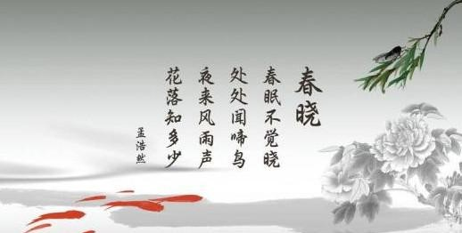
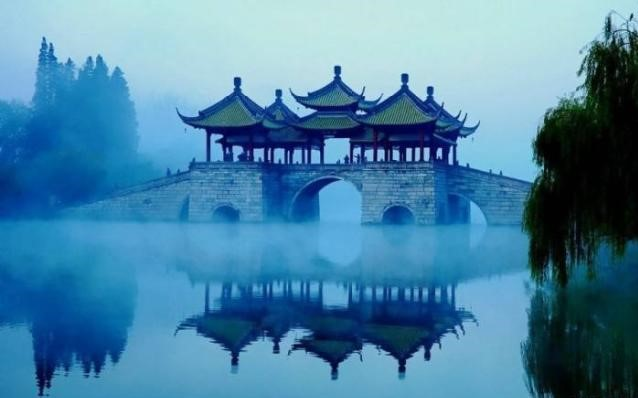
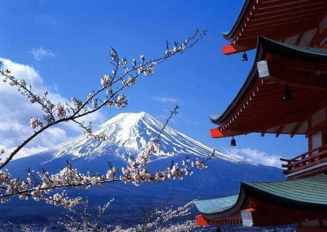

莫愁前路无知己，天下谁人不识君！
中国五千年悠久文化，产生了许多的文字与问题，其中最有特色的便是诗词，一首诗，就是一本文章，甚至一本书，古诗词散发出一种难以抗拒的魅力。
中国古典诗词的文化魅力在于它的自然美。这种自然美展示的是中华民族赖以生生不息的大好河山，蕴含的是中华民族道法自然、天人合一的诗意理念
发布时间：18-06-27 21:44
自从《中国诗词大会》在央视开播以来，一时间全国上下掀起一股的诗词热。我们在重温那些曾经学过的古诗词时，分享了诗词之美，感受了诗词之趣，从古人的智慧和情怀中汲取营养，涵养了我们的心灵。
诗词是我国特色，它讲究押韵，强调韵律，诗的文体是很严格的，段数、句数、韵律、字数、句式、平仄都是固定的，不变的。而且诗词还适合所有热爱诗词、热爱传统文化的大众群体。诗词还是个最好的写作教材，可以用最凝练的笔触，最传神的语句，写出最深挚的情感。
一如激发人内心深处的情感，“会当凌绝顶，一览众山小”是何等的雄心壮志，也有“行至水深处，坐看云起时”的闲适与安逸；有“自古逢秋悲寂寥，我言秋日胜春朝”的豁达与积极向上，也有“莫道桑榆晚，为霞尚满天”的豪放与大气。通过诗歌触摸历史，增长见识，丰富阅历，提升自己。
我们中国人生来就与诗歌相伴，从《诗经》到最鼎盛的唐诗宋词，华夏大地就是个诗词歌赋的国度。在古时候，诗歌就是全民文化。不管九五之尊、达官贵人，还是寒门学士、乞索叫花，都勤于读诗，乐于吟诗，善于写诗。但得意时“仰天大笑出门去”，却落魄时“明朝散发弄扁舟”；只孤独间来个“花间一壶酒”，够畅快际“会须一饮三百杯”。诗词是经，诗人是纬，诗词织就一幅浓浓中国情的画图。
经典引路，诗词为伴。在诗词的海洋里，你会欣喜地发现，那些遥远的面孔，从未如此地鲜活而有趣，那些经典的篇章，字字句句如同珠玑，拨动着心弦。例如爱情：李商隐的“何当共剪西窗烛，却话巴山夜雨时”，元稹的“曾经沧海难为水，除却巫山不是云”崔护的“人面不知何处去，桃花依旧笑春风”。例如友情：“春草绿茸云色白，想君骑马好仪容”，“醉眠秋共被，携手日同行”，“日日泉水头，常忆同携手”。
读“天街小雨润如酥，草色遥看近却无”而知春早，读“水晶帘动微风起，满架蔷薇一院香”而明夏至，读“不堪红叶青苔地，又是凉风暮雨天”而懂秋去，读“忽如一夜春风来，千树万树梨花开”而晓冬深。诗词亦应风物而来，为景为情，风景具致。
诗词蕴含了中华文化的基因，读诗和品诗便是体会生活的内在，年华的魅力，探索人生的意义，拓展视野的高度，感受传统文化带来的冲击。
西风吹老洞庭波
一夜湘君白发多
醉后不知天在水
满船清梦压星河
这是一首极富艺术个性的纪游诗。首、颔二联，诗人即把对历史的追忆与对眼前壮阔的自然景色的描绘巧妙地结合了起来，以虚幻的神话，传递出真实的感情。
“西风吹老洞庭波，一夜湘君白发多。”两句中一个“老”字不可轻易放过。秋风飒飒而起，广袤无垠的洞庭湖水，泛起层层白波，渺渺茫茫。那景象，与春日中轻漾宁静的碧水比较，给人一种深沉的逝川之感，悲秋之情隐隐而出。
但他故意不用直说，而塑造了一个白发湘君的形象，发人深思。传说湘君闻帝舜死于苍梧之野，追随不及，啼竹成斑，那是够悲切的了。而此时萧瑟之秋景，竟使美丽的湘君一夜间愁成满头银发。这种新奇的构想，更使人可以想象到洞庭秋色是怎样的凄寒萧索了。客观世界如此，诗人自己的迟暮之感、衰颓之意，自然尽在不言中了。一个“老”字，融情入景，真可谓达到神而化之的地步。
再看颈、尾联：“醉后不知天在水，满船清梦压星河。”
入夜时分，风停了，波静涛息，明亮的银河倒映在湖中。湖边客船上，诗人从白天到晚上，手不释杯，一觞一咏，终至于醺醺然醉了，睡了。“春水船如天上坐”的感觉，渐渐地渗入了诗人的梦乡。他仿佛觉得自己不是在洞庭湖中泊舟，而是在银河之上荡桨，船舷周围见到的是一片星光灿烂的世界。诗人将梦境写得如此美好，有如童话般地诱人。然而，“此曲只应天上有”，梦醒时，留在心上的只是无边的怅惘。一、二句写悲秋，未必不伴随着生不逢时、有志难伸的感慨；后两句记梦，写出对梦境的留恋，正从反面流露出他在现实中的失意与失望。所以三、四句看似与一、二句情趣各别，内里却是一气贯通、水乳交融。
秋风已久，赏景渐忘景，不分是天上星、水中星。
夜深思量长，怎知何时已醉？昔杜甫心怀长安，所目疮痍，“春水船如天上坐”，但悲其生不能已，故无缘这般深然长醉、安然入梦。泊舟、泊梦，天河或曰星河，景中或曰境中，所思或曰所忘。
诗人的梦境，满船清梦，是诗人思量着的人生。然而，秋湖相往来，物我无碍，陶然自在，正是快哉。亦真亦幻，愈是明了，愈是痴然；境中心中，却深沉了，方潇洒了。所以，境界深了，夜即梦了。
发布时间：19-08-22 11:08
诗词，仿佛浮在书页上的一弯残月，即使你合上书卷，也会在你内心洒下一道道似水光亮；诗词，仿佛一方小轩窗，窗里的人对镜贴花黄，窗外的人早已相顾无言，唯有泪千行；诗词，仿佛一株雨后芭蕉，忧愁的雨滴滑落在黄昏，叹息声，隔窗点滴到天明。
一、爱情类名句：
1、两情若是久长时，又岂在朝朝暮暮。——秦观《鹊桥仙》
2、欲把相思说似谁，浅情人不知。 —— 晏几道《长相思·长相思》
3、只愿君心似我心，定不负相思意。 —— 李之仪《卜算子·我住长江头》
4、春心莫共花争发，一寸相思一寸灰！ —— 李商隐《无题·飒飒东风细雨来》
5、天涯地角有穷时，只有相思无尽处。 —— 晏殊《玉楼春·春恨》
6、相思本是无凭语，莫向花笺费泪行。 —— 晏几道《鹧鸪天·醉拍春衫惜旧香》
7、衣带渐宽终不悔，为伊消得人憔悴。——柳永《蝶恋花·伫倚危楼风细细》
8、问世间，情为何物，直教生死相许？——元好问《摸鱼儿·雁丘词》
9、天不老，情难绝。心似双丝网，中有千千结。——张先《千秋岁·数声鶗鴂》
10、愿君多采撷，此物最相思。 —— 王维《相思》
二、亲情类名句：
1、慈母手中线，游子身上衣。 临行密密缝，意恐迟迟归。 谁言寸草心，报得三春晖。——孟郊《游子吟》
2、遥知兄弟登高处，遍插茱萸少一人。——王维《九月九日忆山东兄弟》
3、近乡情更怯，不敢问来人。——宋之问《渡汉江》
4、少小离家老大回，乡音无改鬓毛衰。儿童相见不相识，笑问客从何处来。——贺知章《回乡偶书》
5、人有悲欢离合，月有阴晴圆缺，此事古难全。但愿人长久，千里共婵娟。——苏轼《水调歌头》
6、洛阳城里见秋风，欲作家书意万重。——张籍《秋思》
7、烽火连三月，家书抵万金。——杜甫《春望》
8、哀哀父母，生我劳瘁。——《诗经》
9、云横秦岭家何在？雪拥蓝关马不前。知汝远来应有意，好收吾骨瘴江边。——韩愈《左迁至蓝关示侄孙湘》
10、王师北定中原日，家祭无忘告乃翁。——陆游《示儿》
三、友情类名句：
1、劝君更尽一杯酒，西出阳关无故人。 —— 王维《渭城曲》
2、孤帆远影碧空尽，唯见长江天际流。——李白《黄鹤楼送孟浩然之广陵》
3、洛阳亲友如相问，一片冰心在玉壶。——王昌龄《芙蓉楼送辛渐》 4、海内存知已，天涯若比邻。——王勃《送杜少府之任蜀州》
5、我居北海君南海，寄雁传书谢不能。桃李春风一杯酒，江湖夜雨十年灯。——黄庭坚《寄黄几复》
6、山回路转不见君，雪上空留马行处。——岑参《白雪歌送武判官归京》
7、我寄愁心与明月，随君直到夜郎西。——李白《闻王昌龄左迁龙标遥有此寄》
8、垂死病中惊坐起，暗风吹雨入寒窗。——元稹《闻乐天授江州司马》
9、聚散苦匆匆，此恨无穷。今年花胜去年红。可惜明年花更好，知与谁同？——欧阳修《浪淘沙·把酒祝东风》
10、莫愁前路无知己，天下谁人不识君。——高适《别董大》
四、写花名句：
1、感时花溅泪，恨别鸟惊心。——杜甫《春望》
2、春风桃李花开日，秋雨梧桐叶落时。 —— 白居易《长恨歌》
3、乱花渐欲迷人眼，浅草才能没马蹄 。——白居易《钱塘湖春行》
4、满地黄花堆积，憔悴损，如今有谁堪摘 。——李清照《声声慢·寻寻觅觅》
5、山重水复疑无路，柳暗花明又一村 。——陆游《游山西村》
6、莫道不消魂，帘卷西风，人比黄花瘦 。—— 李清照《醉花阴·薄雾浓云愁永昼》
7、沙上并禽池上暝。云破月来花弄影。——张先《天仙子·水调数声持酒听》
8、沾衣欲湿杏花雨，吹面不寒杨柳风。 —— 志南《绝句·古木阴中系短篷》
9、春花秋月何时了？往事知多少。——李煜《虞美人·春花秋月何时了》
10、流水落花春去也，天上人间 。——李煜《浪淘沙令·帘外雨潺潺》
诗词之美第一美在什么，它能够给我们所有人，专属于我们中国人的一种表达体系。
外国人不会的，只有我们中国人能够通过中国的古诗词含蓄而优雅地表达丰富的情感。
举个例子，有姑娘分手了，跟一渣男分手了，她会发微博一般怎么说“人的一生总要遇到几个人渣”对吧。
如果懂古诗词的姑娘会怎么说？“从此无心爱良夜，任他明月下西楼。”你看这么有文化的，前男友肯定很后悔了，对吧？
你再比如说，我们经常会网上聊什么说“你说的好有道理，我竟无言以对”，用古诗词怎么讲？“此中有真意，欲辨已忘言。”陶渊明妥妥，没毛病。
诗歌之美第二美，在于它能够给我们日常生活中一份诗意的生活。
人不能活得太物质了，我们每天尤其是在特别讲求效率讲求速度这么一个环境下，每天GPA，我的KPI完成怎么样，我的房价怎么波动，我的股票涨跌，都是这些。
有人说生活不止有眼前的苟且，还有诗和远方。但是注意，诗就能给你带来远方。
你不用出屋，你就在宿舍就在办公室，你就能通过“海上生明月，天涯共此时”，感受那波光粼粼皓月千里的豪迈。
你不用出屋，你就在屋里，你就通过“窗含西岭千秋雪，门泊东吴万里船”，你就能感受那银装素裹下一叶扁舟的潇洒。
诗歌给了我们什么，给了我们小生活中的大格局。
诗词之美第三美，它培养了我们中国人，培养了我们中国人独有的悲天悯人的民族情感。
我们中国人对于贫穷，对于被压迫，有一种天然的悲悯和同情。
面对这些差距造成的不公平，杜甫会怒斥什么，“朱门酒肉臭，路有冻死骨”。战争给社会生产造成的破坏，家破人亡，曹操会怎么感慨，“白骨露于野，千里无鸡鸣”。
你再比如，这个空空世界是很无聊的，李商隐怎么宽慰过我们：嫦娥应悔偷灵药，碧海青天夜夜心。
所以中国古诗词告诉我们每个人要关注民生，关注实事，先天下之忧而忧，后天下之乐而乐。
中国古诗词构筑起了我们所有人最牢靠的集体意识，中国古诗词它也让我们所有的中华儿女的精神空间取了最大的公约数。
我之前在英国的时候，我跟老外聊天，我们可以聊希腊神话，可以聊美国宪法，我们可以聊柏拉图，我们可以聊大数据，我们可以聊拉格朗日定理，什么都能聊，我们唯一聊不了的，就是中国古诗词。
他们都是哈佛、耶鲁、牛津、剑桥，世界顶级名校毕业生，但是他们就不能够理解采菊东篱下，悠然见南山，怎么就你采根菊花，你就恬淡的追求生活了？
老外不理解，但是哪怕是我小学毕业的外婆，年年春节都可以跟我聊但愿人长久，千里共婵娟。
中华诗词，他通过给我们每个人的最原始记忆烙下了一个非常深刻的、共通的文化载体。
全世界不管我们走到哪儿，只要你是中国人，当你发现你浪费粮食的时候，你肯定会想起那句长辈的责备，什么，“谁知盘中餐，粒粒皆辛苦”。
只要你是漂泊远方的游子，你想念家乡的妈妈了，你肯定能理解那句：慈母手中线，游子身上衣。
只要你背井离乡到他乡求学和打拼，当你累了你想家了，你望着天上的明月，你肯定会想起那句：举头望明月，低头思故乡。
当你垂垂老矣，三十年后万里归来，你已不是那偏偏少年，你只是那垂垂老矣的一位老先生的时候，站在你家的门口，迎接你的肯定是…是什么？“儿童相见不相识，笑问客从何处来”。而你心里想的肯定是那句“人面不知何处去，桃花依旧笑春风”。
所以面对今天这个时代我想说，传统文化需要回归。
我们可以说我们中国今天没错，我们中国的经济体量世界第二，我们的政治影响力越来越大，我们的军事实力可以散放到世界任何一个角落，但是一千年前没有这些的时候，我们还是不是中国人？我们是。
一千年后，这些都不重要了，我们还是不是中国人？什么决定我们永远都是中国人？文化，就是我们这些中国古诗词。
只要你会背“锄禾日当午”，走到哪不输谁，中国人不输谁。
儿不嫌母丑，不是说今天中国强大了我们爱国，当年中国弱小了，我们就不爱国。
中国的文化，让我们中国在强大的时候彬彬有礼，在弱小的时候坚韧不拔。因为我们都是流淌着中国血、会说中国话的中国人。
正是因为有了中华文化，而不是任何其他的东西，才有了我们的民族大气磅礴，我们的生活诗意盎然，它是我们每个人的骨气和底气，它也是我们每一个人文化自信源源不绝的动力。
中华诗词辉煌千年，九州同济万古流传，壮哉我中华诗词绵延不断，雄哉我中华诗词洋洋大观，奇哉我中华诗词星移斗转，美哉我中华诗词春色满园！